Historija
Pet hiljada godina
uz Sanu
Od pećine u Hrustovu do grada uz most: kratka historija Sanskog Mosta u osam poglavlja, sa starim fotografijama.

~2600
pr. n. e.
I · Prahistorija
Prvi stanovnici
U Hrustovačkoj pećini, oko 12 km od grada, živjeli su ljudi vučedolske kulture. Nalazi iz nje dovoljno su osobeni da arheolozi govore o posebnom, hrustovačkom tipu te kulture, raširenom dolinama Sane i Une.
Hrustovački tip datira se u kasno bakarno doba, oko 2600-2500. godine prije nove ere. Nalazi se čuvaju u Zemaljskom muzeju u Sarajevu, a pećina je nacionalni spomenik Bosne i Hercegovine.
Mnogo kasnije ovim krajem žive Mezeji, ilirski narod koji rimski pisci smještaju između Sane i Vrbasa. Njihovo rudarsko središte Splonum bilo je negdje na Sani, ali još nije pronađeno. Rimljani su ih pokorili, stanovnike s utvrđenih gradina naselili u doline, a između Sane i Japre uredili rudarski distrikt.


12km
od grada do Hrustovačke pećine
~2600
godina prije nove ere: hrustovački tip vučedolske kulture
Splonum
mezejsko rudarsko središte „na Sani“, još nepronađeno
1374
II · Srednji vijek
Župe Sana i Mren
Prije dolaska Osmanlija ovaj kraj pripada dvjema srednjovjekovnim župama, Sani i Mrenu. Grad Mren bio je središte svoje župe, ali s osmanskim osvajanjem nestaje iz izvora.
Kamengrad, tvrđava na strmom brdu iznad Blihe, prvi put se spominje 1374. Tada je bio posjed knezova Babonića Blagajskih.


1498
do 1878
III · Osmanski period
Musala, most i džamija
Kamengrad pada pod osmansku vlast krajem 15. vijeka. Predanje kaže da je sultan Mehmed Fatih ispod tvrđave klanjao na otvorenom; na tom mjestu nastala je musala, jedna od rijetkih na Balkanu.
Uz most na Sani nastaje utvrđeno naselje, u izvorima Džisr-i Sana („most na Sani“), po kojem grad nosi ime. S njegove kapije sačuvana je kamena ploča s natpisom. Osmanlije grade i mostove na Sani kod Tomine i Trnove; preko ostalih rijeka i potoka karavani su uglavnom prelazili gazom.
Nakon što Osmanlije krajem 17. vijeka izgube Ugarsku i Liku, u Krajinu dolaze muslimanske porodice iz tih krajeva. Neke porodice oko Sanskog Mosta, poput Budimlića, vode porijeklo iz Ugarske, a mnoga krajiška prezimena i danas postoje u Lici.


 NekadDanas
NekadDanas
1878
do 1918
IV · Austro-Ugarska
Selo postaje varošica
Austrougarska vojska ulazi u Sanski Most 8. septembra 1878, bez borbe, nakon dvodnevnih borbi za Ključ. Novi grad počinje rasti na desnoj obali Sane.
Grade se zgrada kotara, kotarski sud, žandarmerija i gruntovnica, a otvaraju se prva apoteka i prve osnovne škole, u Sanskom Mostu i Starom Majdanu. Makadamski put od Prijedora preko Sanskog Mosta do Ključa, dug 78 km, počinje se graditi 1879. Podgrmečka cesta prema Lušci Palanci i Bosanskoj Krupi gradi se od 1882. do 1894, a kasnije i uskotračna pruga prema Drvaru.
Dana 18. augusta 1915. otkriven je spomenik caru Franji Josipu I, podignut troškom građana i seljaka cijelog kotara. Tadašnje novine pisale su da je to prvi carski spomenik u Bosni i Hercegovini. Nova vlast srušila ga je već u decembru 1918.

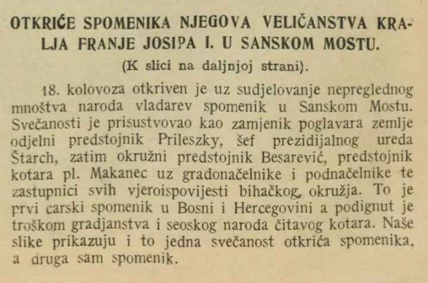
- 1879784
- 18851 242
- 18952 035
- 19102 234
- 19212 411
1913
do 1971
V · 20. vijek
Lopta, Sokolski dom i novi most
Prvu nogometnu loptu donio je u Sanski Most krajem jula 1913. Branko Juzbašić, student u Pragu i sin gradskog ljekara. Stariji mještani nisu bili oduševljeni mladićima koji satima trče za loptom, a Prvi svjetski rat prekinuo je igru. Godine 1922. osnovan je NK Sana.
Godine 1939. građani i općina grade Sokolski dom, među prvima takve vrste u Bosni i Hercegovini. U njemu je 1944, na Drugom zasjedanju ZAVNOBiH-a, donesena Deklaracija o pravima građana Bosne i Hercegovine. Zgrada je 1995. zapaljena, a zatim srušena.
Iste 1939. preko Sane je već stajao novi, betonski gradski most. Prema popisu iz 1971, općina Sanski Most imala je 62.102 stanovnika i bila je deseta po broju stanovnika od tadašnjih stotinu općina u Bosni i Hercegovini.
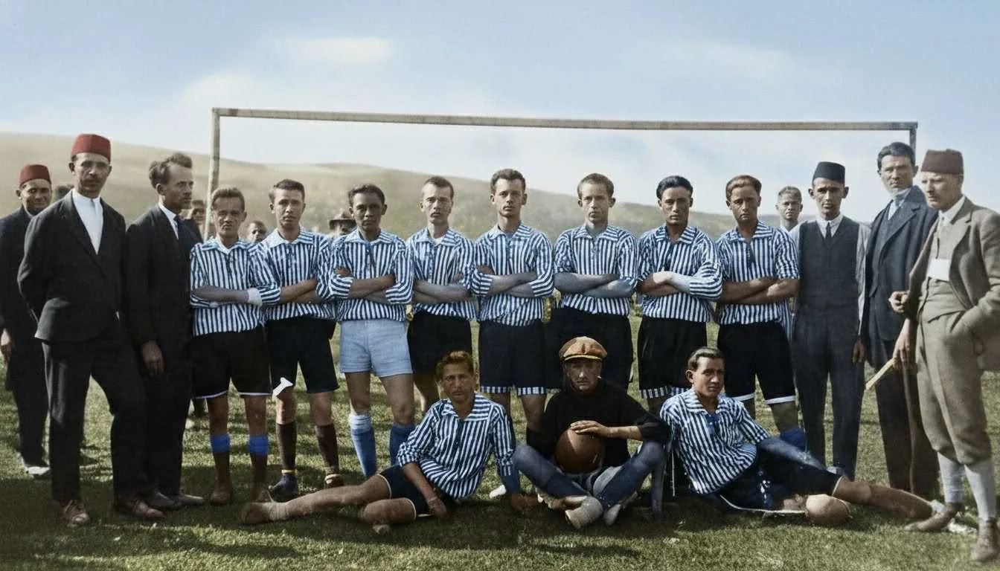
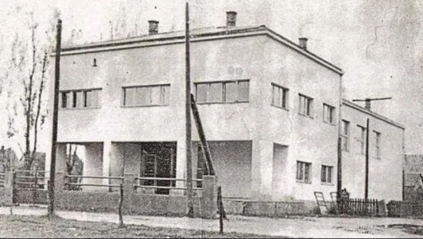
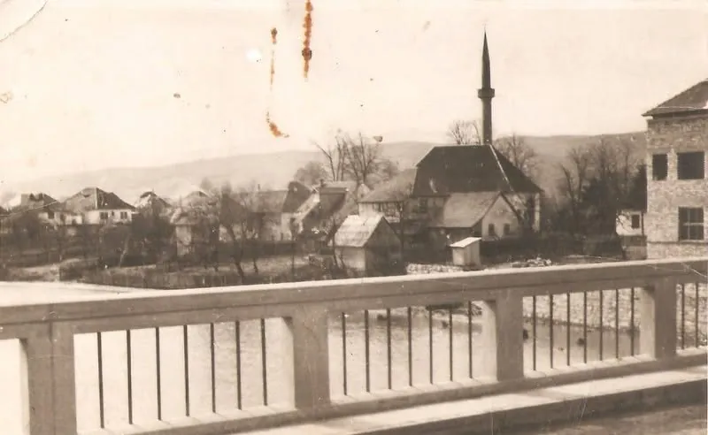
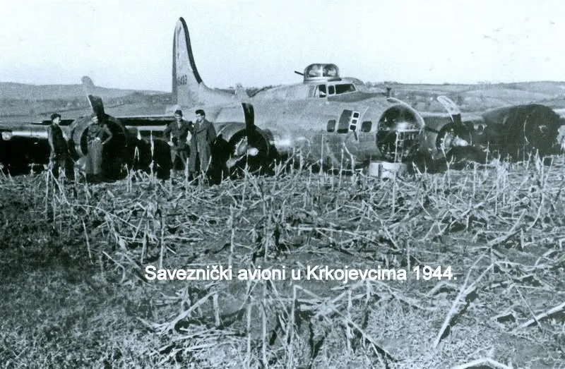


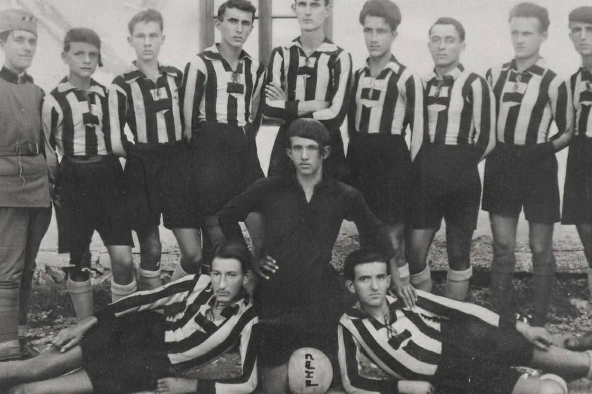
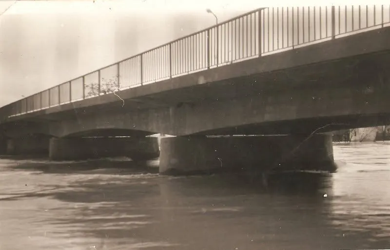


1913
prva nogometna lopta u gradu
1922
osnovan NK Sana
10./100
općina u BiH po broju stanovnika 1971.
1938
do 1986
VI · Kako se živjelo
Pruga, splav i kino „Sana“
Život u gradu i selima dugo se vrtio oko pruge, šume i rijeke. Ovo poglavlje je složeno od onoga što su Sanjani sačuvali: fotografija, novinskih isječaka i dva obična računa.
Pruga

Stanica GrmečŽeljezničari ispred stanice 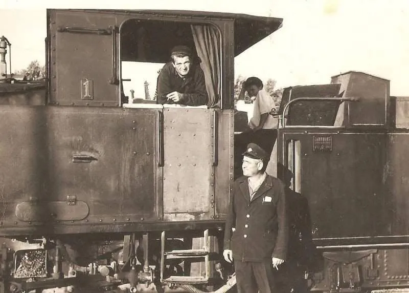
Rudnička lokomotiva, kraj 1960-ihMašinovođa Jasim Kalić, ispred stoji Said Talić 
Stanica Sanski Most, 1975.Arhiv: photogalerija.com
Kratka vijest iz lokalnih novina bilježi dvije promjene na pruzi: u Bosanskom Vrhpolju je izgrađen mali drveni most na Sanici i put od jednog kilometra koji vezuje stanicu s cestom od Sanskog Mosta prema Ključu, a Sanica, nakon 16 godina, ponovo dobija staničnu zgradu, za koju je Direkcija željeznica odobrila 12 miliona dinara.

Drvo niz Sanu
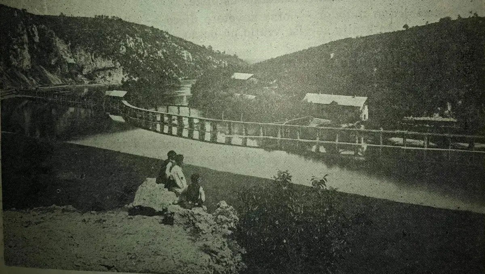
Preduzeće ŠIP „Sana“ imalo je 1968. radilišta po planini, među njima Korčanicu, Mijačicu i Stanića Brdo. Matična biblioteka je tada predložila da se za radnike na njima formiraju pokretne biblioteke.

Dva računa Društvenog doma
U februaru 1958. stolar Mijo Kosorčić napravio je četiri sanduka za drva za biblioteku Društvenog doma. Račun je pisao rukom, stavku po stavku, sve do pola kile tutkala.

Društvenom domu u San. Mostu
Izrada sanduka za drva
- 2 sanduka, 60 × 42 × 45 cm
- 2 sanduka, 70 × 45 × 45 cm
- Daske, 0,250 m³6.750
- Farba, 2 kg840
- Tutkalo, ½ kg200
- Šarke, 4 para80
- Glaspapir, 2 arka220
- Materijal8.090
- Rad8.060
- Ukupno, dinara16.100
Sanski Most, 17. II 1958. · novac primljen 18. II 1958. · potpis: Kosorčić Mijo, stolar
Čika Mijo je imao stolarsku radnju na samom početku Ključke ulice, a do njega obućari Husein Ćurt i Hilmo Beširević.
Zapis uz račun
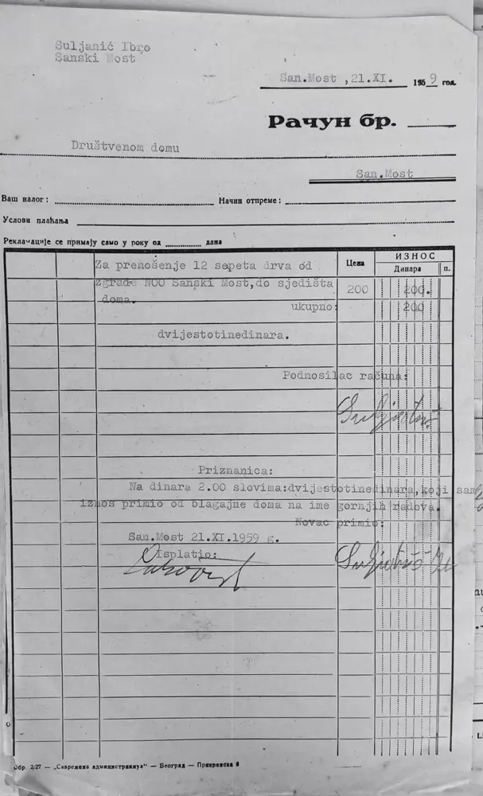
200 dinara
Godinu i po kasnije, 21. novembra 1959, Ibro Suljanić je Društvenom domu naplatio prenošenje 12 sepeta drva od zgrade NOO-a do doma.
Kino „Sana“, august 1968.
Kino „Sana“ prikazuje
August 1968.
- 1-2Bokseri idu u raj
- 3-4Alvares
- 5Bitka u Africi
- 6Prerija časti
- 7-8Ko će da ubije Džesi
- 10-11Arabska
- 12Naši muževi
- 13-14Kako ćeš ukrotiti milion
- 15-16Velika zmija
- 17-18Mat Helm, tajni agent
- 19Udaljena truba
- 20-21Amerika, zemlja obećana
- 22-23Prijateljstvo
- 24-25Lord Jim
- 26Strah
- 27-28U sjenci Kolta
- 29-30Žandarm u Njujorku
Kino je imalo i pokretno kino od 35 mm, koje je gostovalo po selima: Budimlić-Japra, Podvidača, Lušci-Palanka, Vrhpolje, Tomina, Gornji Kamengrad, Trnova, Jelašinovci, Čaplje, Fajtovci.
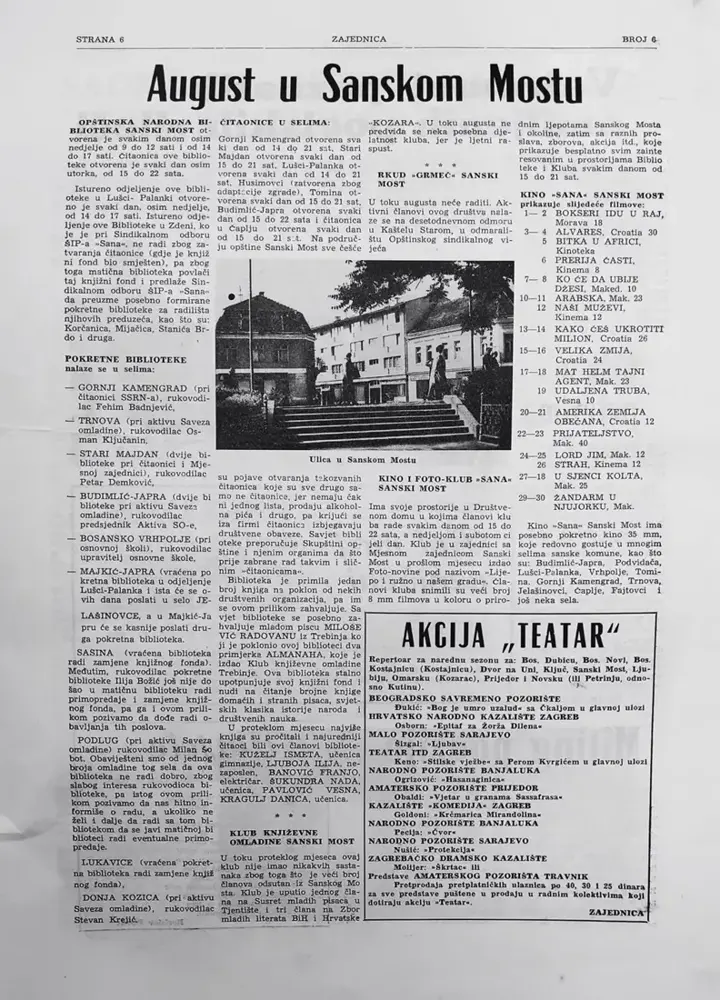
Ista stranica donosi i radno vrijeme biblioteke: svaki dan osim nedjelje, od 9 do 12 i od 14 do 17 sati, a čitaonica do 22 sata. Po selima su radile čitaonice i pokretne biblioteke.
Kad se okupi narod
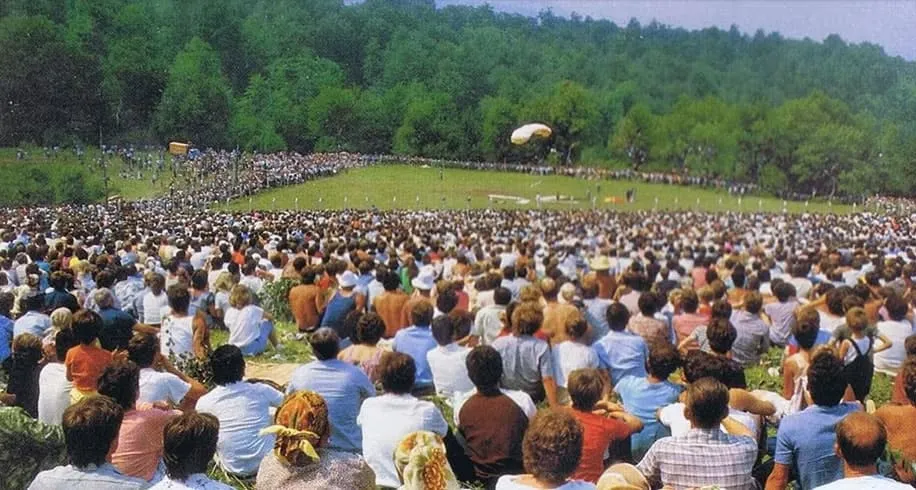
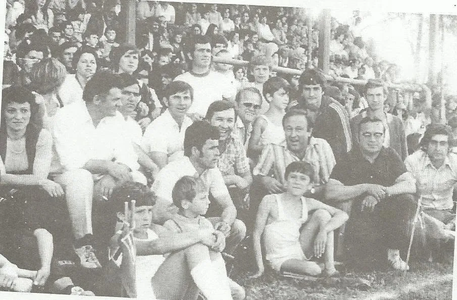
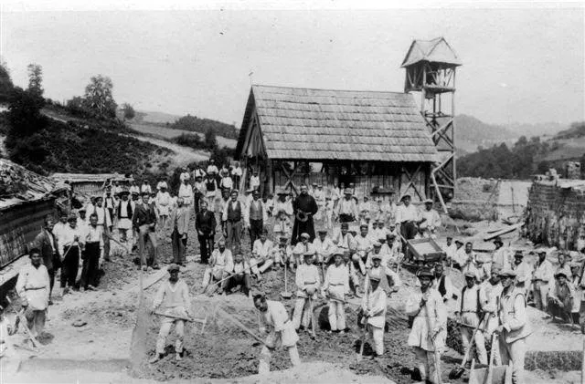
16.100
dinara za četiri sanduka za drva, 1958.
17
filmova u kinu „Sana“ za jedan august, 1968.
35mm
pokretno kino koje je obilazilo sela
Sana
VII · Grad i rijeka
Grad i rijeka
Sana je gradu dala ime, ali ga je i plavila. Knjiga „Sanski Most nekad i sad“ bilježi velike poplave od 1956. do danas.
Ljeti se na rijeci kupalo, a otvoreno prvenstvo grada u plivanju vodilo je oko 1000 m niz Sanu, od Slapova do Gradskog mosta. Posljednje je održano prije više od četiri decenije.
U julu 1902. u Sanskom Mostu izmjereno je 44,5 °C, drugi najviši julski rekord u Bosni i Hercegovini, iza Mostara.
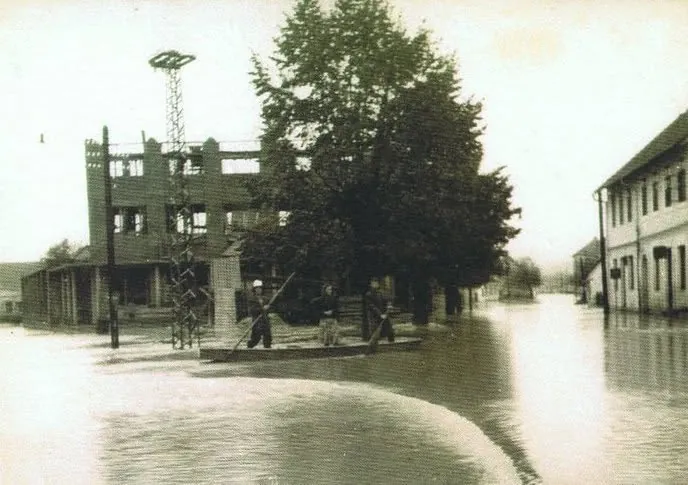
Poplava u centru grada, stara fotografija 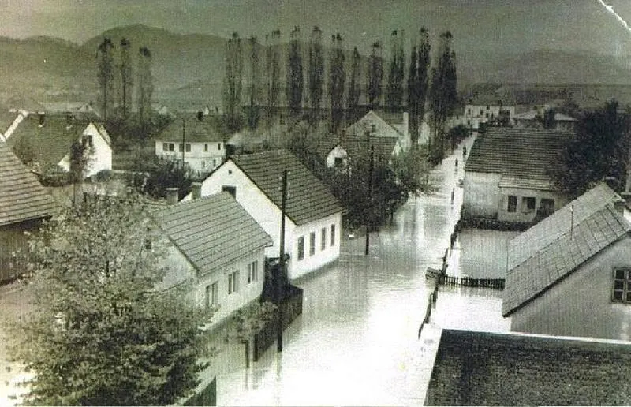
Poplavljene kuće uz Sanu 
Kroz poplavljenu ulicu, stara fotografija 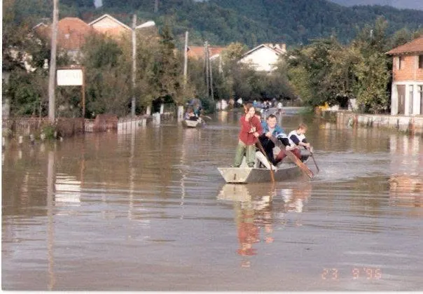
Poplava, 23. 9. 1996. 
Nabujala Sana kod Gradskog mosta, 2014. 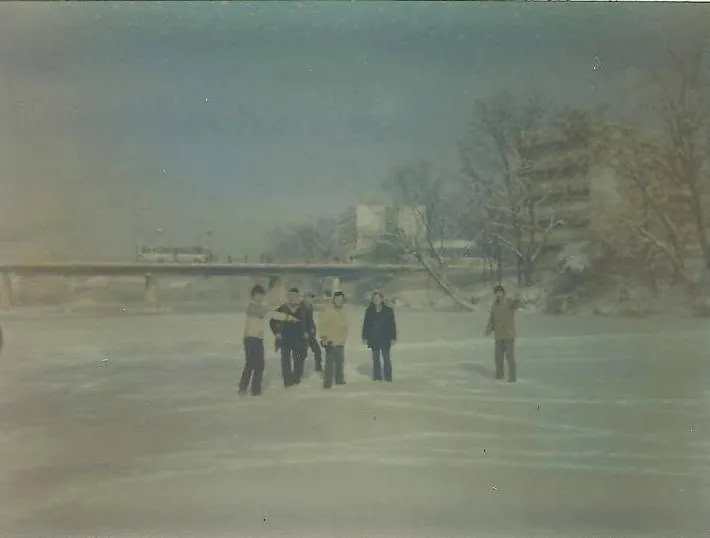
Zaleđena Sana 
Veliki snijeg 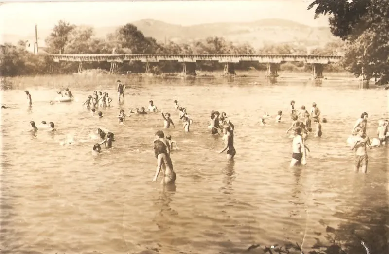
Kupanje na Sani 
Skok s drvenog mosta 
Skok s Mašinskog mosta 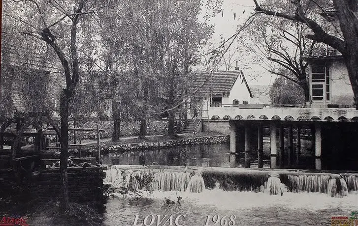
Lovac, 1968.
Većina fotografija iz knjige „Sanski Most nekad i sad“
44,5°C
julski rekord iz 1902.
~1000m
plivalo se od Slapova do Gradskog mosta
1956
prva od velikih poplava u knjizi
1900
do 2005
VIII · Ulice kroz vrijeme
Ista mjesta, druge godine
Šest mjesta u gradu, svako na svojoj vremenskoj liniji: od razglednica s početka 20. stoljeća do fotografija koje je Edin Šarčević snimio od 1996. do 1998.
01 · 1961, 1976, 1997
Prijedorska ulica
Ista ulica u tri vremena: drvored 1961, voda 1976. i proljeće 1997.
- 1961
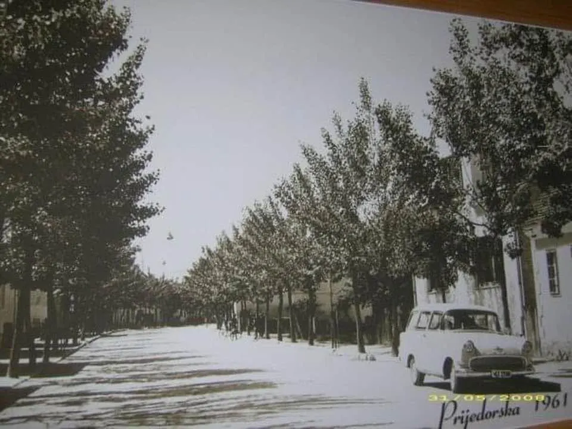
Prijedorska ulica, 1961. - 1976

Poplava u Prijedorskoj, 1976. - 1997
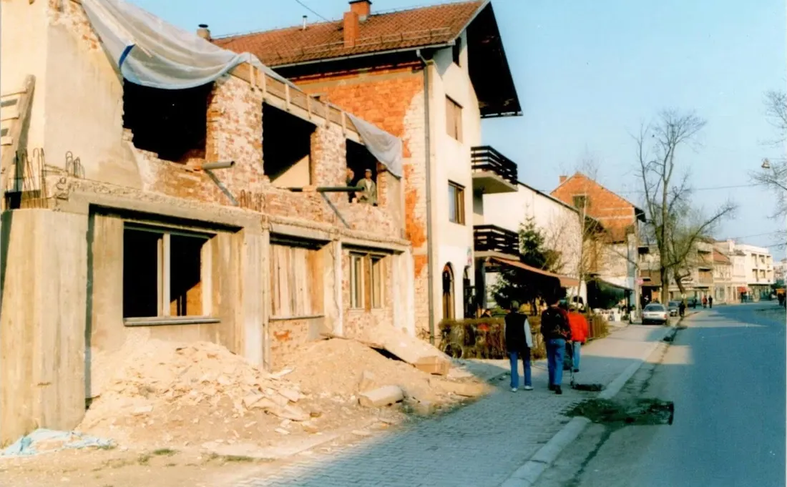
Prijedorska ulica, 31. 3. 1997.Foto: Edin Šarčević - 1997

Prijedorska ulica, 31. 3. 1997.Foto: Edin Šarčević - 1997

Prijedorska ulica, 31. 3. 1997.Foto: Edin Šarčević
02 · od početka XX stoljeća do 1997.
Gradski trg
Na mjestu današnje žute zgrade na trgu „Ljiljana“ početkom 20. stoljeća stajala je kuća Unkića.
- ~1900

Gradski trg i kuća Unkića, početak XX stoljećaIz knjige „Sanski Most nekad i sad“ 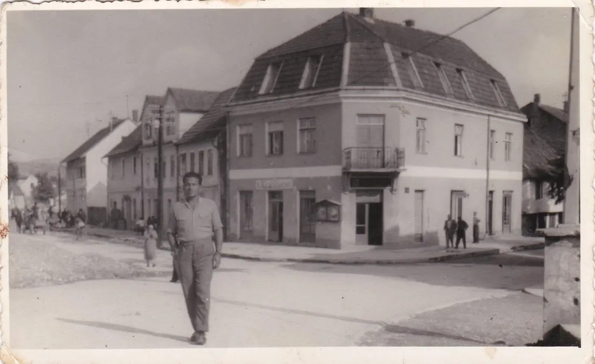
Stari trg - 1970-e

Trg Maršala Tita, početak 1970-ihStara razglednica - 1997
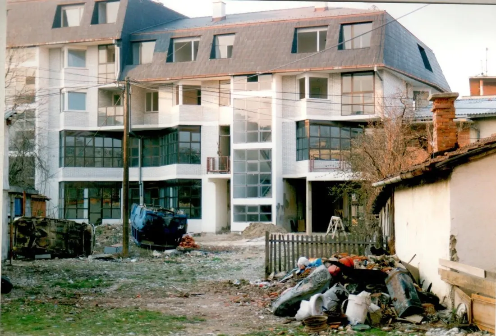
Dvorište žute zgrade, 31. 3. 1997.Foto: Edin Šarčević - 1997

Stari hotel „Asi“, 31. 3. 1997.Foto: Edin Šarčević
03 · 1946, 1998
Hamzibegova džamija
Fotografija iz 1946. i niz snimaka iz aprila 1998, dok se džamija gradila.

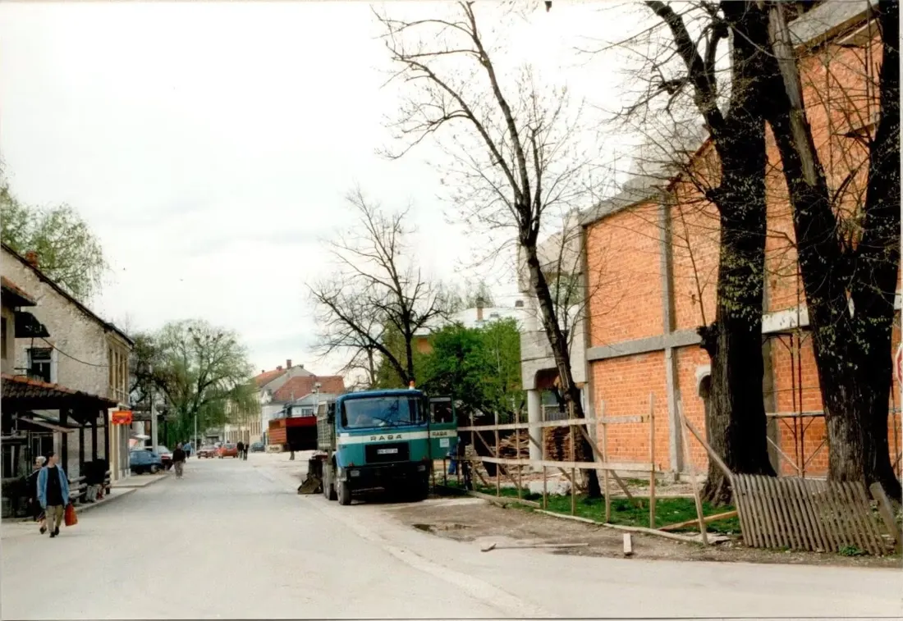


Fotografije iz 1998: Edin Šarčević · Nekad i danas na stranici džamije →
04 · 1996, 1998
Mahala i Muhići
Most na Zdeni prema Mahali i Muhićima i ulice Muhića u proljeće 1998.
- 1996

Most na Zdeni, 12. 10. 1996.Foto: Edin Šarčević - 1996
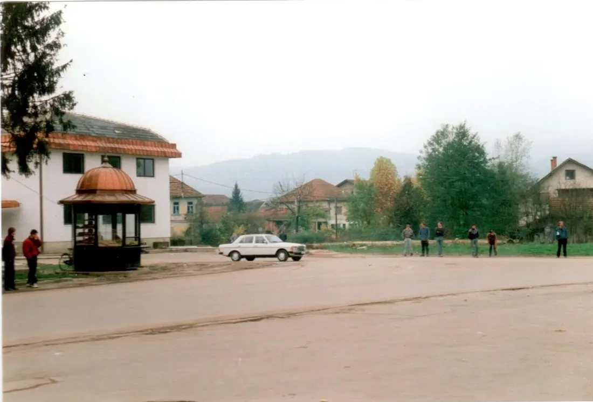
Kod mosta na Zdeni, 12. 10. 1996.Foto: Edin Šarčević - 1998
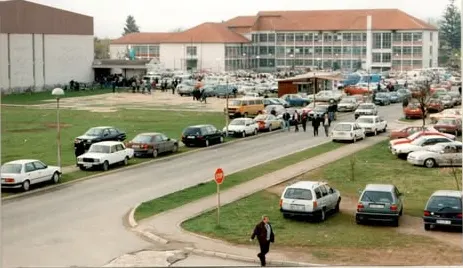
Poslije bajram-namaza, 7. 4. 1998.Foto: Edin Šarčević - 1998

Muhići, 10. 4. 1998.Foto: Edin Šarčević - 1998
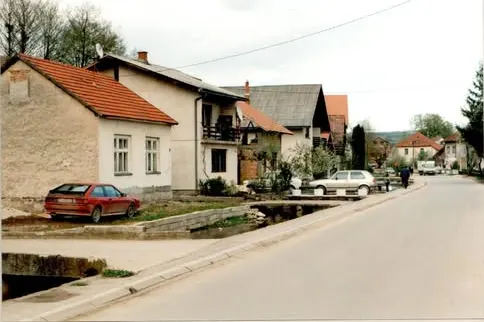
Muhići, 10. 4. 1998.Foto: Edin Šarčević - 1998

Muhići, 10. 4. 1998.Foto: Edin Šarčević
05 · 1996, 1997
Centar
Kino „Sana“, pošta, hotel uz rijeku i glavne ulice, snimljeni u jesen 1996. i proljeće 1997.
- 1996
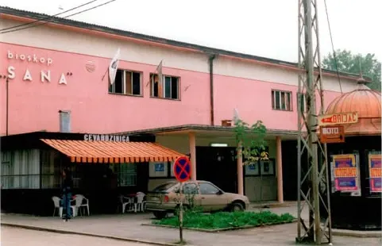
Kino „Sana“, 12. 10. 1996.Foto: Edin Šarčević · Program kina 1968. → - 1996
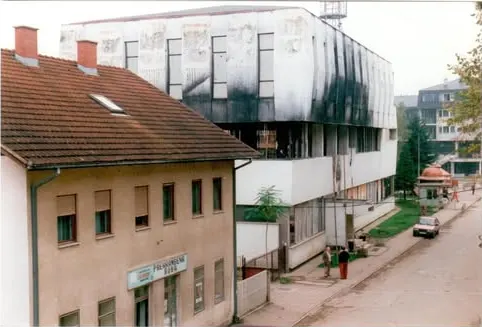
Pošta, 12. 10. 1996.Foto: Edin Šarčević - 1996

Sana i hotel, 12. 10. 1996.Foto: Edin Šarčević - 1996

Izborni plakati, 12. 10. 1996.Foto: Edin Šarčević - 1997
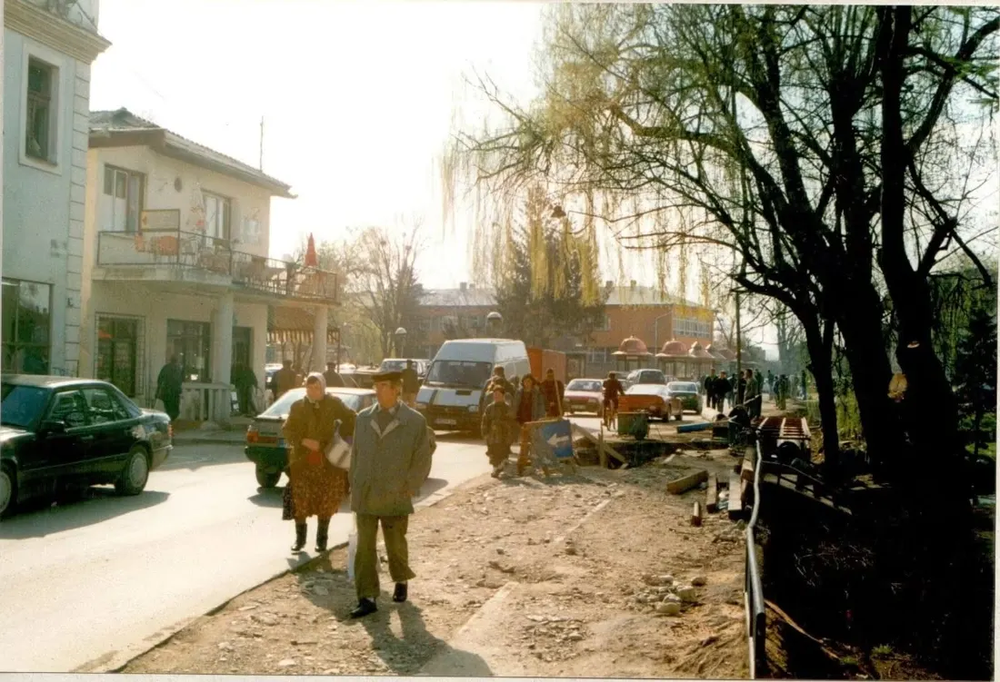
Uz rijeku, 31. 3. 1997.Foto: Edin Šarčević - 1997
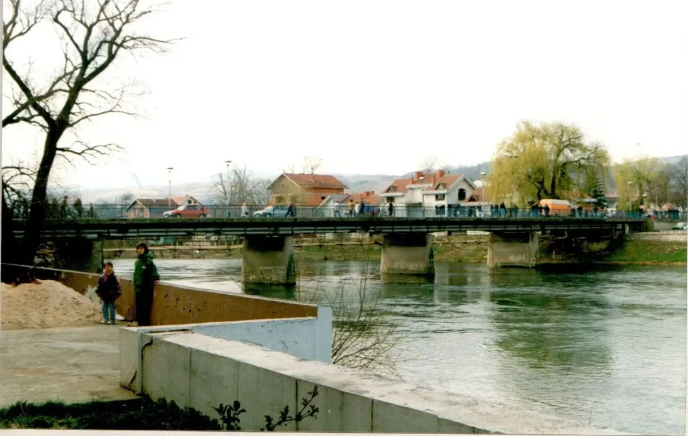
Most, 31. 3. 1997.Foto: Edin Šarčević - 1997

Glavna ulica, 3. 4. 1997.Foto: Edin Šarčević - 1997

Glavna ulica, 3. 4. 1997.Foto: Edin Šarčević - 1997

Crkva, 4. 4. 1997.Foto: Edin Šarčević - 1997

Sana, 4. 4. 1997.Foto: Edin Šarčević
06 · 1968, 2005
Hotel „Lovac“
Stari „Lovac“ uz slap 1968. i gradilište nove zgrade u novembru 2005.
- 1968
„Lovac“, 1968.Iz knjige „Sanski Most nekad i sad“ - 2005

Gradnja nove zgrade, 26. 11. 2005.
Izvori
- Jasmin Zukanović, Sanski Most nekad i sad (2024): većina starih fotografija i podataka na ovoj stranici.
- Hamdija Kreševljaković, „Kamengrad“, Naše starine VI (1958): karta župa Sana i Mren.
- Tehvid Jakupović, 60 godina FK Podgrmeč (2004), sjećanja Slave Došena: prva nogometna lopta i prvi klubovi.
- Federalni hidrometeorološki zavod BiH i RHMZ Republike Srpske: julski temperaturni rekordi.
- „Zajednica“, br. 6 (august 1968), stranica „August u Sanskom Mostu“: program kina „Sana“, biblioteka i čitaonice.
- Edin Šarčević: fotografije grada iz 1996-1998, s datumima na stranicama albuma.
- Računi Društvenog doma iz 1958. i 1959. i zapis o stolaru Miji Kosorčiću.
Ako ste autor neke od ovih fotografija ili znate ko jeste, javite nam se, da je potpišemo ili uklonimo.